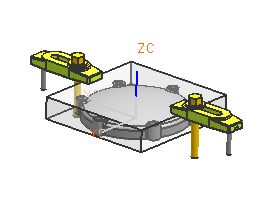

打开 mnf18_clutch_cover_nc。

选择文件→新建。
点击加工选项卡。
加工模板选项将显示在列表中，您将选择表示您即将加工的部件类型的模板。
从单位列表中，选择英寸。
在模板列表中，选择常规设置。
在新文件名组中，已经添加了默认的文件名和文件夹位置，后缀 _setup_1被添加到文件名中。
在要引用的部件组中，名称输入框中显示了原始的部件名。
点击确定。
NX 将创建一个名为 clutch_cover_nc_setup_1 的加工设置装配文件，并且使用一般设置模板创建了加工环境。